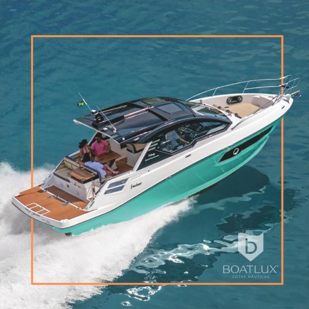
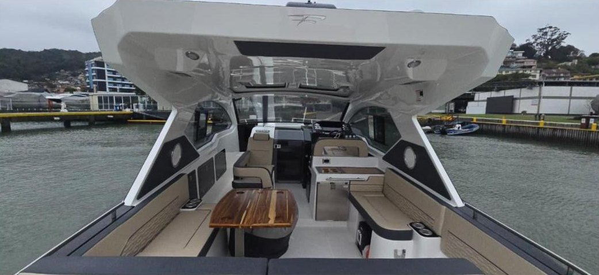
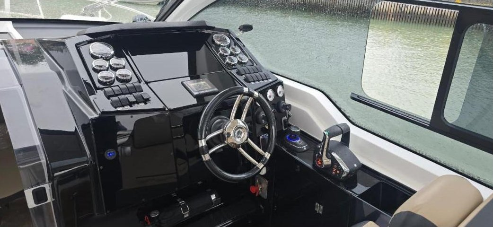
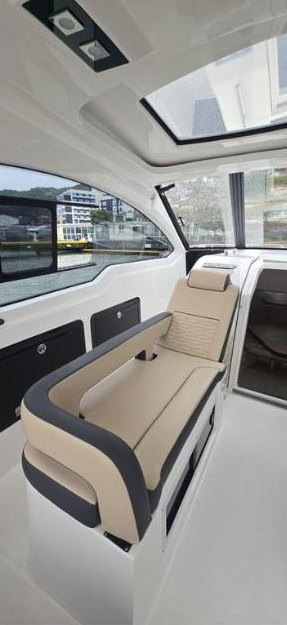
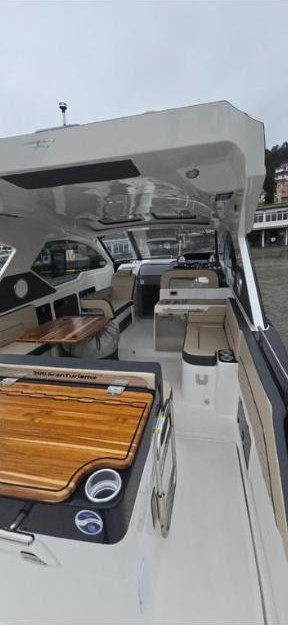
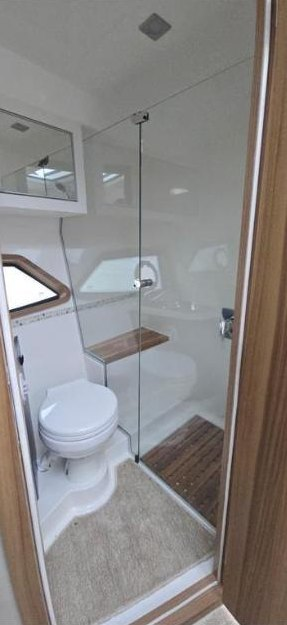

Pré-venda · Zero






Balneário Camboriú · Marina VIP
Focker 388 Gran Turismo 2026
R$ 449.900
A maior da casa: cabine com sofá que vira cama, suíte de casal na meia-nau, banheiro com box, ar-condicionado com gerador e plataforma hidráulica na popa.
- Tamanho
- 38,8 pés
- Passageiros
- 15 dia · 4 noite
- Cotistas
- 6
- Motores
- 2x Mercruiser 350 hp
- Churrasqueira
- Sim
- Marinheiro
- Incluso
Ver itens da embarcação
- Gerador 5 kVA e ar-condicionado 12.000 BTUs
- Plataforma hidráulica
- Teto panorâmico com acionamento elétrico
- Som com 12 alto-falantes e Bluetooth
- GPS Simrad Cruise 9"
- Espaço gourmet com pia e churrasqueira
- Geladeira no cockpit
- Banheiro com box e vaso elétrico
- Cama de casal na meia-nau
- Sistema de água quente
- Guincho elétrico e âncora 10 kg
- Luz subaquática
- Rádio VHF
- Toldo de popa e stobag